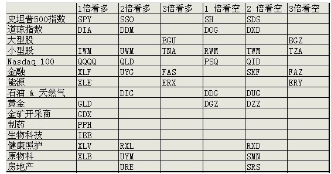

ETF Overview
Table of Contents
中国ETF
做空
- Direxion Daily FTSE China Bear 3X ETF(AMEX:YANG)
The fund invests at least 80% of its assets in: futures contracts;
options on securities, indices and futures contracts; equity
securities; equity caps, floors and collars; swap agreements;
forward contracts; reverse repurchase agreements; ETFs; and other
financial instruments that, in combination, provide leveraged and
unleveraged exposure to the FTSE China 50 Index. The index consists
of the 50 largest and most liquid Chinese companies currently
trading on the Hong Kong Stock Exchange ("SEHK").
- Index Tracked FTSE China 25 Index
- 两倍做空ProShares UltraShort FTSE China 50(FXP)
- The ProShares UltraShort FTSE China 50 ETF provides -2x exposure to a free-float-weighted index comprising 50 of the largest and most liquid Chinese stocks listed on the Hong Kong Stock Exchange.
- FXP’s underlying index is heavily exposed to financials, energy and telecom companies, making the fund somewhat of a bet against these sectors that are dominated by state-owned enterprises.
做多
- Deutsche X-trackers Harvest CSI 300 China A-Shares ETF(ASHR)
- The Deutsche X-trackers Harvest CSI 300 China A-Shares ETF tracks an index of the 300 largest and most liquid Chinese shares traded on the Shanghai and Shenzhen exchanges.
- Financials41.38%
- iShares China Large-Cap ETF(AMEX:FXI)
- The iShares FTSE China 25 tracks an index of the 25 largest and most liquid Chinese stocks traded on the Hong Kong Stock Exchange.
- FXI is the largest and most popular China ETF.
- The fund also carries a heavy concentration in financials, with China's 'big 4' state-owned banks making up about 1/4 of the fund's total weighting.
- hile FXI provides solid large-cap China exposure, investors looking for a more comprehensive China ETF should look elsewhere.
- 成分
- 两倍做多ProShares Ultra FTSE China 50(AMEX:XPP)
- ProShares Ultra FTSE China 25 seeks daily investment results, before fees and expenses, that correspond to twice (200%) the daily performance of the FTSE China 25 Index.
- The fund’s underlying index targets the largest Chinese companies traded in Hong Kong, meaning XPP is mostly a bet on China's state-owned enterprises that dominate the financial, energy and telecom sectors.
- Index Tracked FTSE China 50 Index
- Global X China Financials(AMEX:CHIX)
- CHIX specifically targets the Chinese financial industry, holding a concentrated portfolio of 40 companies stretching across the Banking, Real Estate and Insurance sectors.
- the “big 4”—China Construction Bank, Bank of China, ICBC and Agricultural Bank of China—making up 1/3 of the fund's portfolio.
- Market Vectors ChinaAMC A-Share(PEK)
- 跟随 沪深300指数 (CSI 300 Index holding)
- The Fund does not invest directly in A-Shares. It invests in swaps and other types of derivative instruments that have economic characteristics that are substantially identical to the economic characteristics of China A-Shares stocks.
- 三倍做多Direxion Daily FTSE China Bull 3X(YINN)
- The Daily FTSE China Bull and Bear 3x Shares seek daily investment results, before fees and expenses, of 300% or 300% of the inverse (or opposite) of the performance of the FTSE China 50 Index.
- YINN has a big stake in Internet companies and little exposure to financials?1
新兴国家
巴西
- 巴西iShares MSCI Brazil Capped(EWZ)
- The Underlying Index consists of stocks traded primarily on the BM&FBOVESPA.
- The iShares MSCI Brazil fund tracks a market-cap-weighted index of Brazilian firms covering the entire market-cap spectrum.
- Index tracked: MSCI Brazil 25/50 Index
俄罗斯
- 做多Direxion Daily Russia Bull 3X ETF(RUSL)
- 做空Direxion Daily Russia Bear 3X ETF(RUSS)
- 新兴市场ETF-iShares MSCI(EEM)
- 印度 PowerShares(PIN)
- The PowerShares India Portfolio seeks to replicate the returns of the Indus India Index, a market-cap index of the 50 largest Indian securities listed on the Bombay Stock Exchange and/or the National Stock Exchange.
欧洲
- WisdomTree Europe SmallCap Dividend(DEF)
- The WisdomTree Europe SmallCap Dividend Fund tracks a dividend-weighted index of small-cap European companies that pay dividends.
- WisdomTree Europe Hedged Equity(HEDJ)
- The WisdomTree Europe Hedged Equity ETF tracks an index of eurozone dividend-paying companies that derive a majority of revenue from exports outside the eurozone.
- HEDJ is hedged against the euro for US investors.
- 欧洲金融指数ETF-iShares MSCI(NASDAQ:EUFN)
- Vanguard FTSE Europe(VGK)
- VGK holds a broad, comprehensive portfolio of companies from developed European countries.
- It holds a broad basket of almost 500 securities that excludes small- and micro-caps which tilts the fund larger than the broader European equity universe.
- 德国ETF-iShares MSCI(AMEX:EWG)
- 英国ETF-iShares MSCI(AMEX:EWU)
- 法国ETF-iShares MSCI(AMEX:EWQ)
- 西班牙ETF-iShares MSCI(AMEX:EWP)
- 意大利ETF-iShares MSCI(AMEX:EWI)
其他
- WisdomTree Japan Hedged Equity(DXJ)
- The WisdomTree Japan Hedged Equity ETF tracks a dividend-weighted index of Japanese stocks. The fund is hedged for currency fluctuations between the US dollar and Japanese yen.
- iShares MSCI Japan(EWJ)
- The iShares MSCI Japan ETF tracks a market-cap-weighted index of Japanese stocks. The fund covers roughly 85% of the investable universe of securities traded in Japan.
美股指數ETF：
标普500(SPY)
- 标普500指数ETF-SPDR(SPY)
- 标普500指数ETF-ProShares两倍做多(SSO)
- 标普500指数ETF-ProShares三倍做多(UPRO)
- 标普500指数ETF-ProShares两倍做空(SDS)
- 标普500指数ETF-ProShares三倍做空(SPXU)
DIA
相比S&P 500指数更为大蓝筹
- 道指ETF-ProShares两倍做多(DDM)
- 道指ETF-ProShares两倍做空(DXD)
NASDAQ-100
如果要投资科技股，这个是不二之选。比如苹果、谷歌之类都是其中的重要成份股。
- 纳斯达克100指数ETF-ProShares两倍做多(QLD)
- 纳斯达克指数ETF-ProShares三倍做多(TQQQ)
- 纳斯达克100指数ETF-ProShares两倍做空(QID)
- 纳斯达克指数ETF-ProShares三倍做空(SQQQ)
罗素2000(IWM)
罗素2000指数大体追踪的是美股市值在1000位到3000位的企业，可以视为是美股中小盘股的代表。
- 罗素2000指数ETF-ProShares两倍做多(UWM)
- 罗素2000指数ETF-Direxion三倍做多(TNA)
- 罗素2000指数ETF-ProShares 两倍做空(TWM)
- 罗素2000指数ETF-Direxion三倍做空(TZA)
美股恐慌指数的ETF(VIX)
恐慌指数又称芝加哥期权交易所VIX指数（CBOE Volatility Index），是芝加哥期权交易所市场波动率指数的交易代码，常见于衡量标准普尔500指数期权的隐含波动性。通常被称为“恐慌指数”或“恐慌指标”，它是了解市场对未来30天市场波动性预期的一种衡量方法。在股市暴跌市场发生恐慌性抛售时，该指数上涨。
- ProShares Ultra VIX Short-Term Futures(UVXY)
- VelocityShares Daily 2x VIX ST ETN(TVIX)
- ProShares TR II(SVXY)
- VelocityShares Daily Inverse VIX ST ETN(XIV)
other
- Vanguard Small-Cap Growth(VBK)
- Vanguard Small-Cap Growth ETF seeks to track the MSCI US Small Cap Growth Index, a broadly diversified index of growth stocks of smaller U.S.
- 房地产指数ETF-Direxion三倍做多(DRN)
- 房地产指数ETF-ProShares两倍做多美国房地产(AMEX:URE)
- 房地产指数ETF-Direxion三倍做空(AMEX:DRV)
- 房地产指数ETF-ProShares两倍做空美国(AMEX:SRS)
- 消费品指数ETF-SPDR可选消费品(AMEX:XLY)
- 高科技指数ETF-SPDR(AMEX:XLK)
- 工业指数ETF-SPDR(AMEX:XLI)
- 原材料指数ETF-SPDR(AMEX:XLB
- 能源指数ETF-SPDR(AMEX:XLE)
- 消费品指数ETF-SPDR主要消费品(AMEX:XLP)
- 医疗指数ETF-SPDR(AMEX:XLV)
- 公共事业指数ETF-SPDR(AMEX:XLU)
- 金融指数ETF-SPDR(AMEX:XLF)
- 太阳能ETF-Guggenheim(AMEX:TAN)
- 房屋建筑指数ETF-iShares Dow Jones(AMEX:ITB)
- 生物科技指数ETF-iShares Nasdaq(NASDAQ:IBB)
- Market Vectors Biotech ETF(AMEX:BBH)
- 財務iShares US Broker-Dealers(AMEX:IAI)
- 区域银行指数ETF-SPDR KBW(AMEX:KRE)
- 科網+媒體PowerShares Dynamic Media ETF(AMEX:PBS)
- 零售指数ETF-SPDR标普(AMEX:XRT)
- 债券20+美公债指数ETF-iShares Barcla(AMEX:TLT)
美国EFT

大宗商品
原油相关ETF
- 原油指数ETF-ProShares DJ-UBS两倍做多(UCO)
- VelocityShares 3x Long Crude Oil ETN(UWTI)
- 原油指数ETF-ProSharesDJ-UBS两倍做空(SCO)
- VelocityShares 3x Inverse Crude Oil ETN(DWTI)
- 石油指数ETF-美国(AMEX:USO)
黄金相关ETF
- 黄金ETF-SPDR(AMEX:GLD)
- GLD is the largest, if not the cheapest, of the five ETFs that invest directly in physical gold.
- 黄金ETF-PowerShares DB两倍做多(DGP)
- 黄金ETF-ProShares两倍做多(UGL)
- 黄金ETF-PowerShares DB两倍做空(DZZ)
- 黄金ETF-ProShares两倍做空(GLL)
- Direxion Daily Gold Miners Bull 3X ETF(AMEX:NUGT)
- Direxion Daily Jr Gld Mnrs Bull 3X ETF(AMEX:JNUG)
- 金矿指数ETF-Market Vectors 美交所(AMEX:GDX)
铜
- 铜分类指数ETF-iPath Dow Jones-UBS(AMEX:JJC)
- 铜矿ETF-Global X(AMEX:COPX)
- 铜指数ETF-First Trust ISE Global(NASDAQ:CU)
白银相关ETF
- 白银ETF-ProShares两倍做多(AGQ)
- 白银ETF-ProShares两倍做空(ZSL)
货币
- 做多美元 PowerShares DB US Dollar Index Bullish(UUP)
- The Fund is designed to replicate being long the US Dollar against the following currencies: Euro, Japanese Yen, British Pound, Canadian Dollar, Swedish Krona and Swiss Franc.
- 做空美元 PowerShares DB US Dollar Bearish ETF(UDN)
- 两倍做多欧元 ProShares Ultra Euro(ULE)
- 两倍做空欧元 ProShares UltraShort Euro(EUO)
- EUO provides 2x daily leverage and inverse exposure to the plain-vanilla USD/EUR cross.
- 欧元ETF-CurrencyShares(AMEX:FXE)
- 两倍做空日元 日元ETF-ProShares (YCS)
- 两倍做多日元 ProShares Ultra Yen(YCL)
- CurrencyShares Japanese Yen ETF(AMEX:FXY)
- 英镑ETF-CurrencyShares(AMEX:FXB)
- 做多人民币 人民币ETF-WisdomTree Dreyfus(CYB)
- PowerShares DB G10 Currency Harvest ETF(DBV)
- The G10 currency universe from which the index selects currently includes U.S. Dollars, Euros, Japanese Yen, Canadian Dollars, Swiss Francs, British Pounds, Australian Dollars, New Zealand Dollars, Norwegian Krone and Swedish Krona.
- The PowerShares DB G10 Currency Harvest tracks an index with long exposure to developed-market currencies with high interest rates and short exposure to those with low rates using forward contracts.